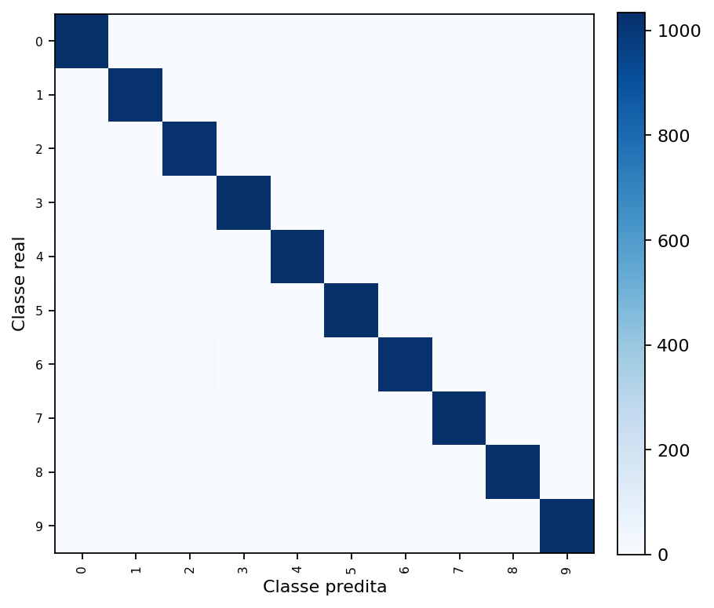
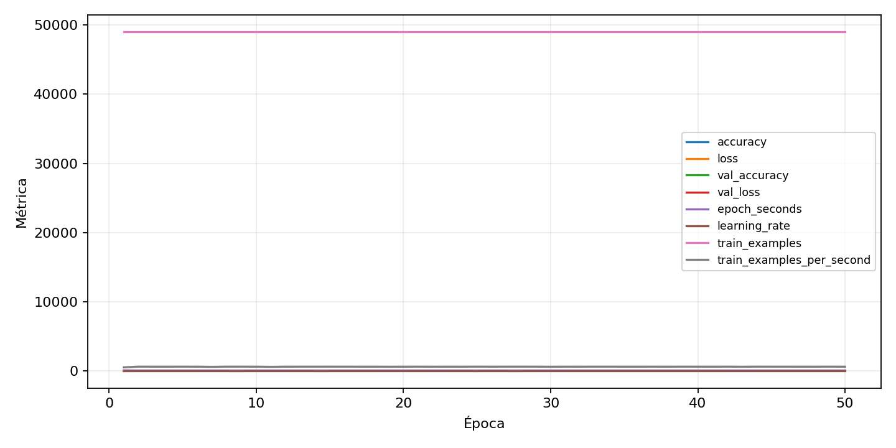

| n_samples | 10500 |
|---|---|
| loss | 0.08920817822217941 |
| accuracy | 0.9813333333333333 |
| balanced_accuracy | 0.9813333333333334 |
| macro_f1 | 0.9813428330696805 |


| Índice | Classe | Suporte | Precisão | Recall | F1 |
|---|---|---|---|---|---|
| 0 | 0 | 1050 | 0.9838095238095238 | 0.9838095238095238 | 0.9838095238095238 |
| 1 | 1 | 1050 | 0.982725527831094 | 0.9752380952380952 | 0.9789674952198852 |
| 2 | 2 | 1050 | 0.9752616555661275 | 0.9761904761904762 | 0.9757258448357926 |
| 3 | 3 | 1050 | 0.9932692307692308 | 0.9838095238095238 | 0.9885167464114832 |
| 4 | 4 | 1050 | 0.9753086419753086 | 0.9780952380952381 | 0.9766999524488825 |
| 5 | 5 | 1050 | 0.9801136363636364 | 0.9857142857142858 | 0.982905982905983 |
| 6 | 6 | 1050 | 0.9706439393939394 | 0.9761904761904762 | 0.97340930674264 |
| 7 | 7 | 1050 | 0.97918637653737 | 0.9857142857142858 | 0.9824394874228761 |
| 8 | 8 | 1050 | 0.978219696969697 | 0.9838095238095238 | 0.9810066476733144 |
| 9 | 9 | 1050 | 0.9951876804619827 | 0.9847619047619047 | 0.9899473432264241 |
{"adapter":"kmnist","balance_mode":"all_raw","class_names":["0","1","2","3","4","5","6","7","8","9"],"dataset":"kmnist","dataset_options":{},"dataset_root":"/home/msduda/datasets-tcc/kmnist","native_channels":1,"normalization":"unit_interval","num_classes":10,"protocol":{"checkpoint_monitor":"val_macro_f1","dtype_policy":"mixed_float16","early_stopping":{"patience":50,"restore_best_weights":true},"evaluation_augmentation":false,"input_channels":"native","optimizer":"Adam","pretrained_weights":false,"reduce_lr_on_plateau":{"factor":0.3,"min_lr":1e-07,"patience":50},"resize":"proportional_padding","test_time_augmentation":false,"training_from_scratch":true},"seed":42,"source_fingerprint":"8928d478d8d23938a73b4f4a92c407bf3d74beff1e0e67e3644d6ecdc30cf828","source_manifest":{"class_names":["0","1","2","3","4","5","6","7","8","9"],"joined_samples":70000,"metadata":{"layout":"kmnist-component-npz"},"name":"kmnist","native_channels":1,"source_path":"/home/msduda/datasets-tcc/kmnist","splits":{"test":10000,"train":60000},"target_size":64},"target_size":64,"test_fraction":0.15,"train_fraction":0.7,"training":{"augmentation":{"brightness_delta":0.0,"contrast_lower":1.0,"contrast_upper":1.0,"cutout_max_frac":0.0,"cutout_prob":0.0,"flip_lr":false,"noise_std":0.0,"translate_frac":0.0,"zoom_max":1.0,"zoom_min":1.0},"batch_size":80,"default_image_size":64,"dtype_policy":"mixed_float16","early_stopping_patience":50,"extra_fraction":0.0,"image_size_overrides":{"gtsrb":128},"keras_verbose":1,"learning_rate":0.0003,"max_epochs":50,"preprocess_cache_max_mib":0,"reduce_lr_factor":0.3,"reduce_lr_min_lr":1e-07,"reduce_lr_patience":50,"shuffle_buffer_max_mib":0},"validation_fraction":0.15}
{"epochs_completed":50,"epochs_recorded":50,"evaluation_seconds":27.36641211999995,"fit_seconds_current_attempt":4669.380560255,"max_epoch_seconds":91.99311537199992,"max_epochs":50,"mean_epoch_seconds":78.17294662971997,"mean_train_examples_per_second":627.2177465654397,"median_train_examples_per_second":629.9514484527002,"min_epoch_seconds":76.93406019200029,"selected_checkpoint":"/mnt/e/tcc-benchmark/outputs/kmnist-alldata-noaug-batch-sweep-2026-08-06/batch-080/kmnist/runs/kmnist__unit_interval__all_raw__seed-42/checkpoints/best.keras","total_seconds":3908.6473314859986,"training_seconds":3908.6473314859986,"wall_seconds_current_attempt":4701.398770314001}
{"elapsed_seconds":4701.452496579999,"event_counts":{"data_preparation_end":1,"data_preparation_start":1,"epoch_end":50,"evaluation_end":1,"evaluation_start":1,"fit_end":1,"fit_start":1,"periodic":927,"run_completed":1,"train_start":1},"generated_at":"2026-08-07T05:15:33.742+00:00","gpu_backend":"pynvml","interval_seconds":5.0,"metrics":{"cpu_percent":{"count":985,"max":17.3,"mean":12.431878172588831,"min":0.0,"p50":11.6,"p95":16.679999999999996},"disk_data_free_bytes":{"count":985,"max":998270107648.0,"mean":998270046307.801,"min":998270038016.0,"p50":998270046208.0,"p95":998270046208.0},"disk_data_percent":{"count":985,"max":2.7,"mean":2.7,"min":2.7,"p50":2.7,"p95":2.7},"disk_data_total_bytes":{"count":985,"max":1081101176832.0,"mean":1081101176832.0,"min":1081101176832.0,"p50":1081101176832.0,"p95":1081101176832.0},"disk_data_used_bytes":{"count":985,"max":27838783488.0,"mean":27838775196.198986,"min":27838713856.0,"p50":27838775296.0,"p95":27838775296.0},"disk_output_free_bytes":{"count":985,"max":207399325696.0,"mean":207386555756.89746,"min":207385726976.0,"p50":207386169344.0,"p95":207386796032.0},"disk_output_percent":{"count":985,"max":79.3,"mean":79.3,"min":79.3,"p50":79.3,"p95":79.3},"disk_output_total_bytes":{"count":985,"max":1000186310656.0,"mean":1000186310656.0,"min":1000186310656.0,"p50":1000186310656.0,"p95":1000186310656.0},"disk_output_used_bytes":{"count":985,"max":792800583680.0,"mean":792799754899.1025,"min":792786984960.0,"p50":792800141312.0,"p95":792800485376.0},"elapsed_seconds":{"count":985,"max":4701.393981,"mean":2353.191320627411,"min":0.031711,"p50":2351.005209,"p95":4482.9319565999995},"gpu_count":{"count":985,"max":1.0,"mean":1.0,"min":1.0,"p50":1.0,"p95":1.0},"gpu_memory_percent":{"count":985,"max":35.36577224731445,"mean":32.73811049872849,"min":29.868459701538086,"p50":32.74049758911133,"p95":32.8434944152832},"gpu_memory_total_bytes":{"count":985,"max":8589934592.0,"mean":8589934592.0,"min":8589934592.0,"p50":8589934592.0,"p95":8589934592.0},"gpu_memory_used_bytes":{"count":985,"max":3037896704.0,"mean":2812182278.497462,"min":2565681152.0,"p50":2812387328.0,"p95":2821234688.0},"gpu_temperature_c":{"count":985,"max":49.0,"mean":42.665989847715736,"min":37.0,"p50":42.0,"p95":48.0},"gpu_utilization_percent":{"count":985,"max":98.0,"mean":22.72791878172589,"min":0.0,"p50":32.0,"p95":40.0},"process_cpu_percent":{"count":985,"max":217.9,"mean":160.78944162436548,"min":0.0,"p50":148.1,"p95":213.1},"process_read_bytes":{"count":985,"max":15671296.0,"mean":15594590.603045685,"min":7933952.0,"p50":15671296.0,"p95":15671296.0},"process_rss_bytes":{"count":985,"max":3799105536.0,"mean":3641551403.143147,"min":1029910528.0,"p50":3731763200.0,"p95":3779964928.0},"process_vms_bytes":{"count":985,"max":49811427328.0,"mean":49497216876.37766,"min":39581515776.0,"p50":49608003584.0,"p95":49743269888.0},"process_write_bytes":{"count":985,"max":1368064.0,"mean":1355846.692385787,"min":4096.0,"p50":1368064.0,"p95":1368064.0},"ram_available_bytes":{"count":985,"max":15523201024.0,"mean":13078423375.269035,"min":12922327040.0,"p50":12986810368.0,"p95":13535621939.2},"ram_percent":{"count":985,"max":22.2,"mean":21.305177664974618,"min":6.6,"p50":21.9,"p95":22.1},"ram_total_bytes":{"count":985,"max":16619077632.0,"mean":16619077632.0,"min":16619077632.0,"p50":16619077632.0,"p95":16619077632.0},"ram_used_bytes":{"count":985,"max":3696750592.0,"mean":3540654256.7309647,"min":1095876608.0,"p50":3632267264.0,"p95":3680210124.8}},"sample_count":985,"schema_version":1}